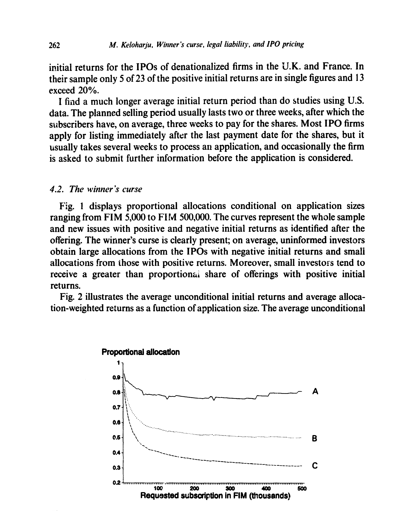
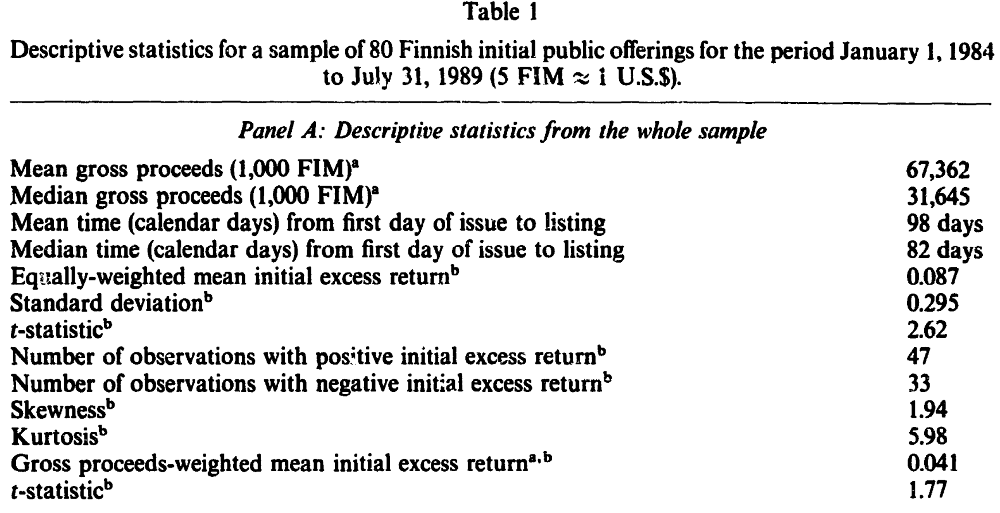
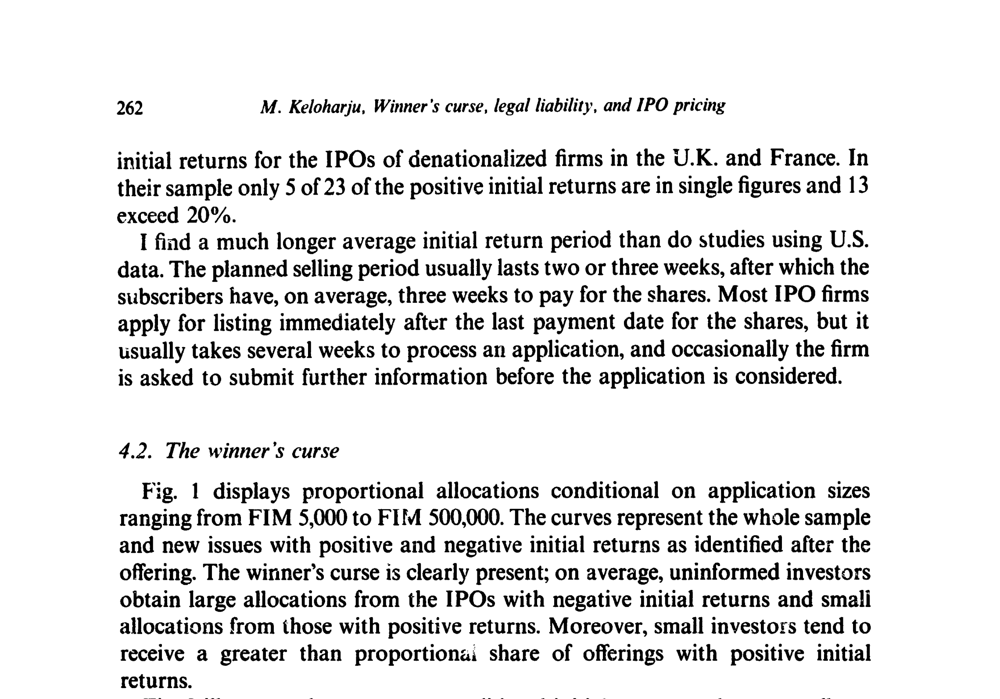
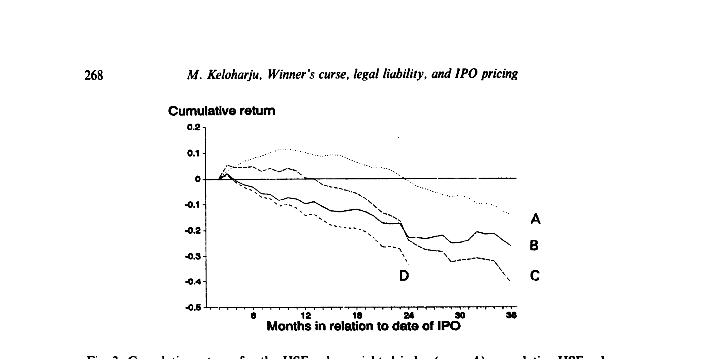
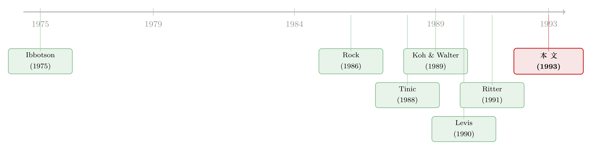

新股「打折」的钱，到底进了谁的口袋？——一份芬兰配售账本里的赢家诅咒
本文读的是 Keloharju (1993, Journal of Financial Economics)：利用芬兰 IPO 罕见的「配售规则公开」数据，作者直接验证了 Rock (1986) 的赢家诅咒——新股表面上 8.7% 的初始收益，一旦按你真正能买到的份额加权，就被压到了零甚至更低；与此同时，芬兰几乎不存在「招股书诉讼」风险，新股却照样折价，说明「为了躲官司才打折」的说法在这里站不住脚；而三年之后，这些新股相对大盘累计跑输了约 21 个百分点。
1 引言：一顿端到面前就凉了的「免费午餐」
新股上市第一天大涨，几乎是全世界资本市场的共同景象。学术界把这件事叫做 IPO 抑价 (IPO underpricing)：发行价系统性地低于上市后的交易价，仿佛发行人主动把一笔钱「留在了桌上」。美国的数据是这样，英国、新加坡、瑞典的数据也是这样。
于是一个再自然不过的推论是：那我去申购新股不就稳赚了吗？
可现实里，几乎没有哪个散户靠「逢新必打」发了财。这就奇怪了——如果新股平均上涨 10%，钱怎么没落到申购者手里？
答案藏在一个我们平时根本看不见的环节里：配售。你下了单，但在一只热门新股里，你能分到的，往往只是你想买的零头；而在一只没人要的新股里，你想买多少给你多少。换句话说，那 10% 的平均收益，是对「所有新股、每只都买满」这个虚构投资者算出来的。真实的你，买到的是另一篮子东西。
这正是本文的主角——芬兰赫尔辛基经济学院的 Matti Keloharju，在 1993 年这篇 JFE 论文里要追问的事：新股抑价的那笔钱，到底有没有真的进到一个普通申购者的口袋里？ 而要回答它，你需要一样几乎所有市场都缺的东西——配售数据。
2 赢家的诅咒：一个让收益「凭空蒸发」的机制
要理解这篇文章，得先把 Rock (1986) 的赢家的诅咒 (winner's curse) 讲透，因为全文都是围着它转的。
Rock 把投资者分成两类：知情者 (informed investors) 和不知情者 (uninformed investors)。知情者知道哪只新股「真便宜」，于是他们专挑被低估的去抢；而那些被高估的新股，知情者根本不碰。
接着，一个自然的问题是：那不知情者会遇到什么？他对每只新股都申购、且每次下的单都差不多大。结果是——
- 在好新股（被低估的）上，因为知情者一拥而上、严重超额认购，他被挤掉了大半，只分到一点点；
- 在坏新股（被高估的）上，知情者掉头就走，没人跟他抢，他想买多少买多少，于是满仓接下。
这就是「赢家的诅咒」：你「赢得」配售（拿到了大份额）的那一刻，恰恰是这只新股没人要的时候。把好新股的小份额和坏新股的大份额放在一起加权，那个看上去诱人的平均收益就被稀释殆尽。
于是 Rock 给出了那个反直觉的结论：正因为有赢家的诅咒，发行人才必须把新股整体折价——否则不知情者算完账发现自己注定亏钱，就会退出市场，新股根本卖不出去。抑价不是发行人的慷慨，而是付给不知情者的一笔「留客费」，刚好让他们打平。
这套逻辑后来在 IPO 配售研究里反复出现。关于「配售里的逆向选择如何让 12% 的初始收益缩水」，可参见《12% 的「免费午餐」，为什么端到你面前就凉了？》。
问题在于：要检验这个机制，你必须知道每只新股配售比例到底是多少。而绝大多数市场的配售是黑箱——投行说了算，外人无从知晓。这也是为什么这篇看似「冷门小国」的论文，价值恰恰在于它的数据。
3 芬兰为什么是一间理想的实验室
芬兰的制度安排，几乎是为检验赢家的诅咒量身定做的。
第一，配售规则是公开的、且「公平」。 在芬兰，公司多半通过大银行遍布全国的分支网络发股。为了省去繁琐的人工，银行很早就定下了清晰的配售规则：分到多少股，只取决于你下单的大小，而不取决于你和投行的私交。很少使用抽签，而是按比例配售。更妙的是，规则通常在新闻稿里公布，散户可以事先准确估算出「配售加权」后的初始收益——这把结论从「某个特定投资者」推广到了任何不知情申购者。
第二，配售规则偏向小投资者。 分到的股数虽然是申购规模的非减函数，但规则被刻意设计成对小额申购更友好。如图 1 所示，配售比例随申购金额上升而明显下降。

Figure 1: Average proportional allocations as a function of the value of shares requested. The sample
第三，几乎没有「招股书诉讼」风险。 这一点是本文第二个贡献的关键，后面会专门讲：在样本期里，芬兰的证券发行基本不受监管，投资者就算被招股书误导，能拿到的赔偿也很有限——实际上只有构成欺诈的严重错漏才会担责。换句话说，这是一个能把「为躲官司而折价」这条解释关掉的天然环境。
样本本身也很「干净」：1984 年 1 月到 1989 年 7 月间，芬兰共有 91 家公司公开发行普通股，占 1969–1992 年全部 IPO 的九成以上。作者最终纳入 80 家（剔除了配售规则不清、无投行、发行太小等 11 家），其中 27 家在赫尔辛基交易所主板上市、49 家在 OTC、3 家在第三市场。这是一份近乎穷举的样本，几乎不存在选择偏误。
4 识别策略：把「初始收益」算到小数点后
本文不是因果识别意义上的 DiD 或 IV，它的「识别」在于两套收益口径的对照——同一批新股，用两种权重各算一遍，差额就是赢家诅咒的大小。先看个体层面的初始超额收益是怎么定义的：
$$ar_i = \frac{P_{i1}(1 - TR_i) - P_{i0}}{P_{i0}} - \frac{I_{i1} - I_{i0}}{I_{i0}} + \frac{r_{fi0}\,(\rho_i - o_i)}{365}$$
逐项看：\(P_{i1}\) 是上市首日最高价与最低价的均值，\(P_{i0}\) 是认购价，\(TR_i\) 是交易成本（含佣金与交易税，通常约占 1.8%）。第一项就是扣掉成本后的毛收益率。第二项 \((I_{i1}-I_{i0})/I_{i0}\) 用 HSE 价值加权指数把这段时间的大盘涨跌减掉——因为芬兰从发行到上市平均要等约三个月，这段时间市场会动。第三项把占用资金期间的无风险利息补回来（\(r_{fi0}\) 是首日的一个月无风险收益，\(\rho_i-o_i\) 是从发行首日到最后缴款日的天数）。可以看到，作者在度量上相当较真，把时间成本和风险都老老实实地算了进去。
但真正关键的一步，是接下来的配售加权收益。它才是这篇文章的灵魂方程：对每个固定的申购策略 \(s\)（比如「每只都申购 5,000 马克」），用各只新股的配售比例去给个体收益加权——
这条式子的妙处在于：如果赢家的诅咒成立，那么权重 \(a_{is}\) 一定和收益 \(ar_i\) 负相关——好新股（高 \(ar_i\)）配得少（低 \(a_{is}\)），坏新股（低甚至负 \(ar_i\)）配得多。于是配售加权后的 \(\overline{ar}_s\) 必然低于等权平均。两者之差，就是诅咒的代价。
至于长期表现，作者用了 Ibbotson (1975) 的 RATS（returns across time and securities）方法估市场调整后的横截面 beta，再用累计平均市场调整收益 (CAR)、持有期收益与「财富相对值」(wealth relative) 三套口径交叉验证，benchmark 用 HSE 价值加权指数（并用等权指数做稳健性）。这一步是为了堵住「会不会只是 beta 没调好」的质疑。
5 主要结果：被配售一口口吃掉的初始收益
先看等权口径。表 1 给出描述性统计：等权平均初始超额收益为 0.087（即 8.7%），t 值 2.62，显著为正；80 只新股里 47 只为正、33 只为负。注意这个「正负比」——它比新加坡、英国的样本更接近美国（Ibbotson、Tinic），说明芬兰市场并不是个怪胎。分布右偏（偏度 1.94）、尖峰厚尾（峰度 5.98），Jarque–Bera 检验在 1% 水平上拒绝正态，所以作者特意提醒：t 值要谨慎看待。

Table 1
如果改用发行规模加权（gross proceeds-weighted），平均初始收益就降到 0.041（4.1%），t 值只剩 1.77——已经不那么显著了。这是第一个信号：越大的发行，抑价越小。
但真正的重头戏是配售加权。如图 2 所示，横轴是申购策略（从 5,000 到 500,000 马克），上面一条是等权（无条件）初始收益，下面一条是配售加权后的收益。两条线被清清楚楚地拉开了一道口子：一旦把「你实际能买到多少」算进去，那条诱人的正收益曲线就被压到了零附近、甚至更低。

Figure 2: illustrates the average unconditional initial returns and average alloca-
这正是 Rock 模型预言的画面，而且和 Koh & Walter (1989) 在新加坡的发现遥相呼应——他们那边等权初始收益高达 27%，配售加权后只剩 1%。芬兰的故事重复了同一句话：对一个普通的不知情申购者来说，新股抑价基本上只是「看上去很美」，落到手里大致打平。 那 8.7% 不是你的收益，而是知情者的。
这也解释了一个老问题：为什么发行人「肯把钱留在桌上」却不生气？因为那笔钱本就是付给市场、用来维持申购者愿意进场的成本。相关讨论可参见《盖茨的那场「不高兴」：新股为什么总把钱留在桌上》。
6 法律责任：一个在芬兰被证伪的故事
讲到这里，故事本可以收尾了。但作者紧接着抛出第二个问题，而这恰恰是反转所在。
在美国，还有另一套解释抑价的著名假说——Ibbotson (1975) 和 Tinic (1988) 的诉讼规避 (lawsuit avoidance) 假说：美国发行人之所以折价，是因为招股书一旦有错漏就容易被告，故意压低发行价可以降低被起诉的概率。Tinic 还列了若干可检验的推论，比如 1933 年证券法之后的 IPO 应当抑价更多。
问题是，在美国很难干净地检验它——初始收益本身波动巨大，又有 Beatty & Ritter (1986)、Carter & Manaster (1990) 等承销商声誉模型给出相同的预测，几个故事缠在一起，谁也分不清。
而芬兰提供了一个绝佳的「反事实」：这里的证券发行基本不受监管，投资者维权赔偿的空间极小，发行人几乎不可能因招股书问题吃官司。按诉讼规避假说，这种环境下新股不该有明显抑价。可结果呢？芬兰新股照样抑价（8.7%），正负比还和美国接近。
于是反转出现：在一个几乎没有法律责任压力的市场里，抑价依然存在。 这就强有力地说明，「为躲官司才打折」至少在芬兰不是主要驱动。抑价更可能来自赢家的诅咒这类信息不对称机制，而非法律成本。
这并不是说诉讼规避在美国一定不成立——只是芬兰这个「关掉了诉讼开关」的实验告诉我们，没有诉讼风险也足以产生抑价。两种环境的对照，恰恰是这篇文章方法论上最漂亮的地方。关于诉讼风险与抑价在美国的正面交锋，可参见《新股「打折」，到底是不是在给将来的官司买保险？》。
7 三年之后：新股的长跑成绩单
第三个贡献，把镜头从「上市第一天」拉长到「上市三年」。
作者跟踪了每只新股 36 个月（以 21 个交易日为一个事件月）的后市表现。结论和美国、英国的证据一致，却又更尖锐：从第一个后市价格到三周年，IPO 的平均总收益是 -22.4%，而同期 HSE 价值加权指数只跌了 -1.6%。 也就是说，新股相对大盘累计跑输了约 21 个百分点。图 3 把这条「越走越低」的累计收益曲线画了出来。

Figure 3: Cumulative returns for the HSE value-weighted index (curve A), cumulative HSE value-
更值得玩味的是它和 Ritter (1991) 的关系。Ritter 发现美国的长期跑输主要集中在「发行高峰年」，并把可能的原因归为三条：fads（市场过度乐观）、风险度量偏差、单纯的「坏运气」。芬兰这个样本恰好提供了一个独立检验：它的后市期（1984–1991）大部分时间是熊市，与 Ritter（1975–1987，多为牛市）几乎不重叠。两个市场环境天差地别，长期跑输却同时出现——这就削弱了「纯属坏运气」的解释：如果只是运气，不该在如此不同的环境里都系统性地落后。
当然，长期跑输有多少是「真实的」、多少是事件研究算法本身的产物，至今仍有争议。关于「上市后跌跌不休可能只是一道算术题」的视角，可参见《为什么「上市后跌跌不休」可能是一道算术题？》。
8 文献脉络：从「为什么打折」到「打折给了谁」
把这篇论文放回它所在的那条河流里，脉络就清楚了。
最早，Ibbotson (1975) 系统记录了美国新股的抑价现象，并留下了 RATS 这件后来被反复使用的工具。真正给抑价提供「机制」的，是 Rock (1986) 的赢家诅咒模型——它第一次说清楚了「为什么必须打折」。与此同时，另一支由 Tinic (1988) 代表的诉讼规避假说，以及 Beatty & Ritter (1986)、Carter & Manaster (1990) 的承销商声誉模型，给出了竞争性的解释。

接着，实证开始追问「打折的钱去了谁手里」——这需要配售数据。De Ridder (1986) 在瑞典、Levis (1990) 在英国、尤其是 Koh & Walter (1989) 在新加坡，都找到了赢家诅咒的证据。然后，研究的另一条线索转向长期：Ritter (1991) 发现美国 IPO 三年累计跑输匹配公司约 29%，Aggarwal & Rivoli (1990)、Levis (1992)、Simon (1989) 也各有发现。
本文 Keloharju (1993) 的位置，就在这两条线索的交汇处：它用一份近乎穷举、规则公开、且「没有诉讼风险」的芬兰样本，同时钉死了三件事——赢家诅咒真实存在、法律责任并非抑价主因、长期跑输与市场环境无关。三个贡献串成一条逻辑链，而它们能成立，全靠那份别处没有的配售账本。
评论与延伸（Q&A + 研究方向）
(a) 几个可能的疑问
Q：等权收益 8.7% 显著，配售加权后「接近零或更低」，可作者并没有给配售加权收益一个干净的 t 检验，这个结论稳吗？
这是本文识别上最该警惕的一点。等权 8.7%（t=2.62）、规模加权 4.1%（t=1.77）都有正式统计量，但「配售加权降到零」更多是图 2 的视觉与跨申购策略的描述，初始收益分布又明显非正态、且因发行期重叠而不独立（作者自己强调 t 值要谨慎）。所以「打平」是方向上可信的定性结论，精确到「正好为零」则应保守看待。
Q：把市场涨跌和无风险利息都减掉，会不会「调过了头」，人为压低了初始收益？
作者的调整其实是合理的：芬兰从发行到上市平均隔约三个月，期间资金被占用又承担了大盘风险，不调整反而会高估「申购者真实赚到的钱」。这恰恰比 Koh & Walter 只算无风险机会成本更彻底。真正的影响是让芬兰的抑价显得比「未调整」口径温和，但这是更诚实的口径。
Q：诉讼规避假说被证伪，是不是说美国的抑价也和法律无关？
不能这么外推。芬兰实验只证明了「没有诉讼风险也足以产生抑价」，即诉讼规避不是抑价的必要条件。美国是否仍有一部分抑价来自法律成本，需要在美国制度内部检验。本文的价值是切断了一条解释、而非一票否决。
Q：长期跑输 22.4%，会不会只是 beta 或风险没调对？
作者用 RATS 估了横截面 beta，并用 CAR、持有期收益、财富相对值三套口径互证，benchmark 还换了等权指数做稳健性，目的就是堵这个口子。新股缺乏上市前价格、风险本就难估，但多口径一致跑输，加上熊市样本与 Ritter 牛市样本同向，至少让「风险误估」不太可能解释全部。
Q：为什么用 HSE 价值加权指数，而不用更贴近样本的 OTC 指数做基准？
因为样本里多数是 OTC 新股，而 OTC 指数本身在样本期才建立，其成分几乎就是这些样本公司——用它做基准等于「自己比自己」，会人为地找不到异常收益。匹配公司法也不可行（1984 年前可匹配的非 IPO 公司比样本还少）。退而求其次用 HSE 价值加权指数，是数据约束下的合理选择。
Q：这套「赢家诅咒」逻辑，对今天打新的散户还成立吗？
机制层面成立：只要存在「好新股被抢、坏新股满仓」的配售不对称，等权收益就会高估真实收益。变化的是制度——如今很多市场用抽签或比例配售、信息也更对称，诅咒的幅度可能不同，但「不要用平均抑价去推算自己能赚多少」这个教训是普适的。
(b) 几个可能的研究问题与提案
1. 把「赢家诅咒」搬到公司债的新发市场
【经济故事】公司债一级市场同样存在「抢手券超额认购、冷门券随便配」的现象，承销商的簿记 (book-building) 配售里很可能藏着和 IPO 同构的赢家诅咒，只是债券的下行收益分布更不对称（违约的左尾）。如果存在，则新债的「首日价差」也会高估不知情机构的真实收益。
【可行性】中。需要一级配售明细（通常非公开，可向承销团或监管申请）+ TRACE 类首日成交数据。识别策略可平移本文：用配售比例给首日超额收益加权，对照等权口径。难点在拿到配售微观数据。
2. 用外资 vs. 本地申购者，分解「谁是知情者」
【经济故事】Rock 模型里的「知情/不知情」是抽象的，但在跨境市场里，外资机构与本地散户的信息优势天然有别。如果能区分两类申购者的配售与首日卖出行为，就能直接观察「谁分到了好新股、谁接了坏新股」，把赢家诅咒的「赢家」具体到人。
【可行性】中到高。北欧、韩国、台湾等市场有按投资者类型分类的成交/持有数据（本博客已有多篇基于此类数据的研究）。识别可用「外资可投资度」之类的外生变化。数据若可得，doable。
3. 「没有诉讼风险」的自然实验，能否扩展到证券法改革前后
【经济故事】本文靠跨国（芬兰 vs. 美国）切断诉讼解释，但更干净的是同一市场内法律责任的突变。某国引入或加强招股书民事赔偿责任的那一年，若抑价没有系统性上升，就再次反驳诉讼规避假说。
【可行性】高。许多新兴市场在 1990s–2000s 引入了证券法民事责任条款，可做事件研究/DiD。关键是找到「只改了诉讼责任、其他发行制度不变」的干净改革，并控制 IPO 周期性波动。
4. 长期跑输与「赢家诅咒」是不是同一枚硬币的两面
【经济故事】如果不知情者系统性地多接了「被高估」的新股，那这些券在长期里就更可能跑输——首日的配售不对称，或许正是三年后跑输的前因。可检验：首日配售加权收益越低（诅咒越重）的新股，长期跑输是否越严重。
【可行性】中。本文样本本身就同时有配售数据与 36 个月后市数据，理论上可在芬兰样本内做横截面回归（80 只样本偏小，统计力有限），更理想的是在更大的市场重做。
5. 流动性视角：抑价是否在补偿「将来不好卖」
【经济故事】芬兰新股从发行到上市要等约三个月、且多在 OTC 交易，后市流动性可能很差。抑价或许部分是对未来流动性折价的补偿，而非纯粹的信息成本。这与赢家诅咒并不互斥，但可分解二者的相对贡献。
【可行性】中。需要后市的买卖价差/成交频率数据（本文已用最高最低价均值，零成交日用买价，可据此构造 Roll 类或零收益天数的流动性代理）。识别上可在控制赢家诅咒强度后，看流动性代理对抑价的边际解释力。
参考文献
- Aggarwal, Reena and Pietra Rivoli (1990). Fads in the initial public offering market? Financial Management 19, 45–57.
- Beatty, Randolph and Jay Ritter (1986). Investment banking, reputation, and the underpricing of initial public offerings. Journal of Financial Economics 15, 213–232.
- Carter, Richard and Steven Manaster (1990). Initial public offerings and underwriter reputation. Journal of Finance 45, 1045–1067.
- De Ridder, Adri (1986). Access to the Stock Market: An Empirical Study of the Efficiency of the British and Swedish Primary Market. Federation of Swedish Industries, Stockholm.
- Ibbotson, Roger (1975). Price performance of common stock new issues. Journal of Financial Economics 2, 235–272.
- Keloharju, Matti (1993). The winner's curse, legal liability, and the long-run price performance of initial public offerings in Finland. Journal of Financial Economics 34, 251–277.
- Koh, Francis and Terry Walter (1989). A direct test of Rock's model of the pricing of unseasoned issues. Journal of Financial Economics 23, 251–272.
- Levis, Mario (1990). The winner's curse problem, interest costs and the underpricing of initial public offerings. Economic Journal 100, 76–89.
- Levis, Mario (1992). The long-run performance of initial public offerings: The UK experience 1980–88. Financial Management, forthcoming.
- Ritter, Jay (1991). The long-run performance of initial public offerings. Journal of Finance 46, 3–27.
- Rock, Kevin (1986). Why new issues are underpriced. Journal of Financial Economics 15, 187–212.
- Simon, Carol (1989). The effect of the 1933 Securities Act on investor information and the performance of new issues. American Economic Review 79, 295–318.
- Tinic, Seha (1988). Anatomy of initial public offerings of common stock. Journal of Finance 43, 789–822.